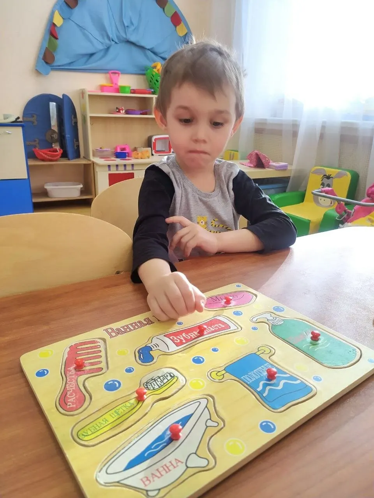
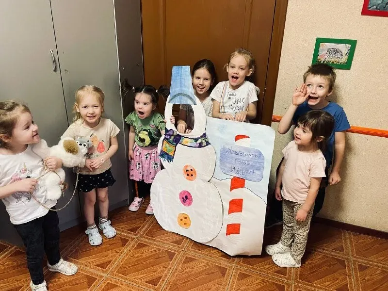
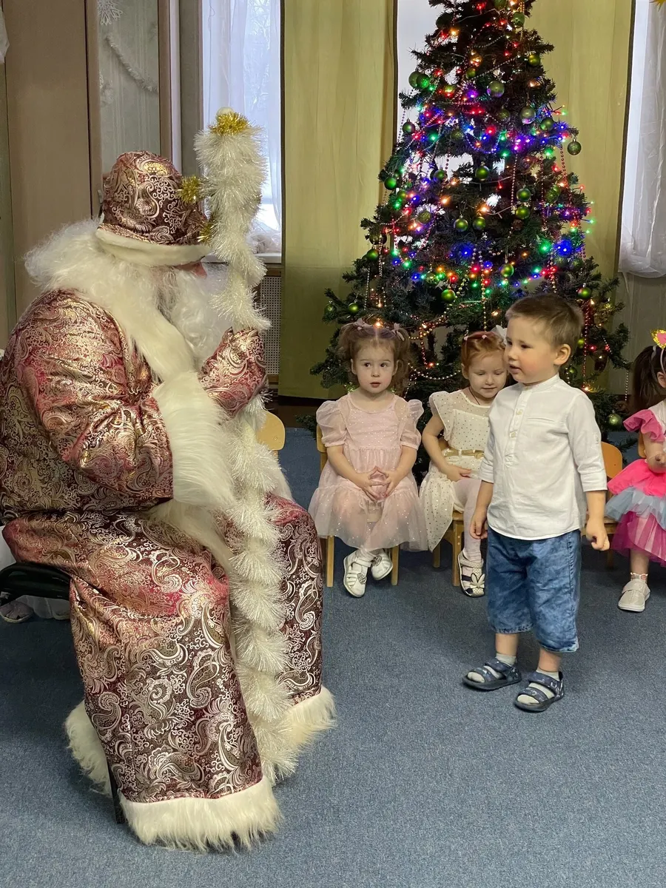
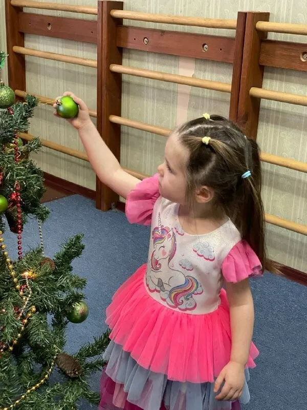

Детский центр · Пермь
Буратино: занятия для детей в Перми
Программы, расписание и запись в одном месте.
- Запись одним сообщением
- Ждём: пн-пт 08:00–19:00
- 4,8 и 28 отзывов на Яндекс.Картах

Направления и цены
Стоимость назовёт администратор при записи.
Что есть
- Продлёнкав отзывах: помощь с домашним заданием, питание, прикладное творчествоуточнить
- Летний лагерьв отзывеуточнить
- Логопедв отзыве: все звуки поставилиуточнить
- Раннее развитие, мама и малышуказано в особенностях карточкиуточнить
- Детский сад и яслирубрика карточкиуточнить
Как записаться
- 01
Пишете нам
Выберите направление, дату и время в форме ниже или напишите в мессенджер.
- 02
Уточняем детали
Администратор подтверждает время и отвечает на вопросы.
- 03
Приходите
Адрес: Пермь, улица Чкалова, 42.



Что пишут гости
Чуткое отношение к детям
В отзыве: внимательное отношение, накормят и помогут сделать домашнее задание.
Внимательные администраторы
В отзыве: всегда напомнят заранее о занятиях.
Разные программы
Родители пишут про продлёнку, лагерь, логопеда и подготовку к школе.
Отзывы с Яндекс.Карт
«Продленка и лагерь просто супер! Очень комфортная обстановка для детей, хороший пед. состав, клиентоориентированность руководства, обратная связь для родителей, что очень важно! Рекомендую!»
Дарья Л. · 15 августа 2025
«Ходим в садик с июля 2024 года (в 1,5 года пошли). Всем довольны! Нравится близкое расположение к дому, хорошее руководство и воспитатели ! Доча через месяц как начала ходить в садик - стала быстрее развиваться.»
ALIS ПЛИТКА-КЕРАМОГРАНИТ · 6 февраля 2025
«Дочка посещает садик Буратино . Очень нравится. Дети всегда чем-то заняты, что-то клеят, рисуют, лепят.Есть зал, для активных игр. Каждая неделя - отдельная тема для изучения. Для меня огромный плюс - это отсутвие телевизора в группе. Дети учатся играть в игры друг с другом , делать зарядку под музыку, а не сидеть и смотреть в экран.»
Ульяна Троховцева · 7 февраля 2025
Отзывы с карточки на Яндекс.Картах.
Частые вопросы
Как записаться?
Выберите направление, день и время в форме на странице или напишите в мессенджер. Администратор подтвердит запись.
Где вы находитесь?
Пермь, улица Чкалова, 42. пн-пт 08:00–19:00.
Сколько это стоит?
Стоимость назовёт администратор при записи. Актуальные цены уточняйте у него.
Запишитесь - ответим в течение дня
- Адрес
- Пермь, улица Чкалова, 42, Пермь
- Часы
- пн-пт 08:00–19:00
- Телефон
- +7 (995) 477-57-40